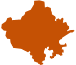
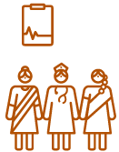
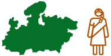

-
2014
Ashok Alexander sets up The
Antara Foundation drawing
lessons on scale from business
and his experience in Avahan.
-
2015 
MoU signed with the
Government of Rajasthan and
Tata Trusts to begin working
in Rajasthan.
Started work in 2 districts in
Rajasthan (Jhalawar, Baran).
Established our flagship
interventions AAA Platform,
Rationalization of registers, and
Nurse Mentoring, along with
various other pilotsto improve
the state of maternal and
child health service delivery.
-
2017

Developed and piloted a
cutting-edge integrated AAA
app, as a digital version of the
AAA platform, to further
improve data use and quality,
and efficiency of the three
frontline workers.
The Chief Minister of
Rajasthan launches the AAA
platform across the state under
the name ‘Rajsangam’.
-
2019
AAA platform was completely scaled
up across Rajasthan’s 46000+
villages, and handed over to the
state government.
Program launched in 1 district in
Madhya Pradesh and piloted in 2 blocks in Chhattisgarh.
Our health system strengthening
interventions expand to include
capacity building of frontline workers
and coaching of government
supervisors in addition to our
existing suite of flagship solutions.
-
2020

Our footprint expands to 2 districts
in Madhya Pradesh.
Our data capture tool for ASHA
workers, called ASHA Diary
gets scaled across the state
of Madhya Pradesh.
-
2021
Our pilot in Chhattisgarh
is concluded.
Our footprint expands to
5 districts
in Madhya Pradesh.
We support the state
government in COVID
relief efforts.
-
2022
Our footprint reaches 8 districts
in Madhya Pradesh.
Our scope of interventions
evolves from a pure health
system strengthening program
to include community
mobilization as a crucial pillar of
our implementation model.
We win ‘CSR Project of the
Year’ award for our program in
Chhindwara district.
-